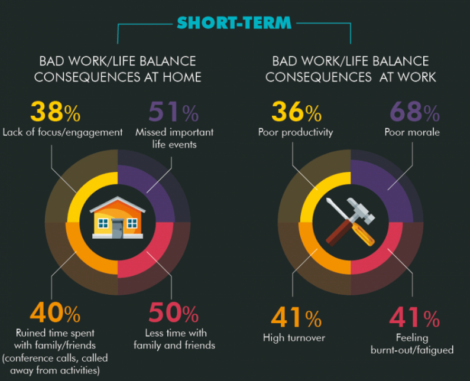
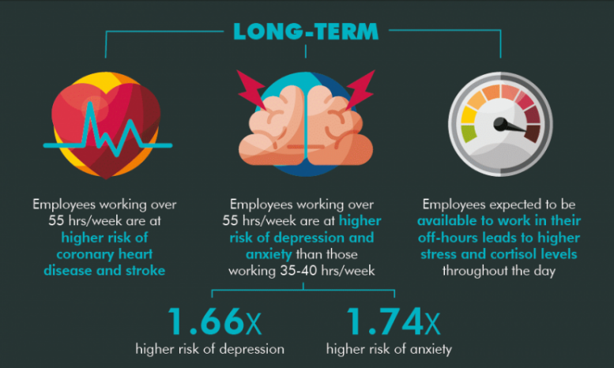

# Succeeding as a remote worker
Office Optional
## Sandhills Developement
### Chris Klosowski
#### CTO - Partner

### My Remote Work Story
### 2010 - 2012
Software Developer @ GoDaddy
Worked from the office 100%
### 2012 - 2014
Ability to periodically work from home
### January 1, 2015
Joined Sandhills Development
### 2015 - 2016
100% Remote but worked from home
### Early 2017
Started working 2 days a week from Gangplank
### Mid 2017
Family started travling 1 time a quarter
### Mid 2017 - Current
Full time working remote but not at home

## 20 People / 8 Timezones


Full-time remote
35% Would Change Jobs
12% Companies offer
Part-time remote
37% Would Change Jobs
24% Companies offer
## Pants not required
Working from home can be difficult
## Pants not required
Working ~~from home~~ remotely can be difficult
Find your routine
What is your 'Day Starter'?
Lunches
Breaks
Set a stop timer
Find your ideal place(s)
Coffee Shop
Co-Working Space
Parks
Traveling
Home
Digital Nomad (Traveling)
Work From Home
Have a fallback location
Build your ideal workspace
Comfort is key
"Blocker Busting" activities
## Socialization
No office, No problem?
Professional Associations
Co-Working Spaces
Religeous Groups
Non-Professional Groups
## Find people outside your profession
Association for Psychological Science researchers have found that social isolation increases the risk of mortality by 29%.
If you or someone you know needs support, call the National Suicide Prevention Lifeline at 1-800-273-8255 or text “START” to 741-741.
## Work/Home Separation




66% of full-time U.S. Employees strongly believe they do not have work/life balance.
Be realistic…
Be Flexible…
Adjust your workspace…
Plan Ahead…
Designate an "office"…
Discuss it…
## Communication
### Let me count the ways
Slack
Email
Project Management Tools
GitHub
Trello
Synchronous vs Asynchronous
Asynchronous Communication
Time-agnostic
Historical Reference
Allows more than text-based
Transfer real-time to persistent
Communicate in full thoughts
Over-communicate
Explain challenges
Voice concerns
Be verbose
Sources
Gallup State of the American Workplace
Association for Psychological Science: Loneliness and Social Isolation as Risk Factors for Mortality: A Meta-Analytic Review
America Psychological Association Center for Organizational Excellence: By the Numbers: A Psychologically Healthy Workplace Fact Sheet
Work Life Balance Stats from Small Biz Trends (2018)